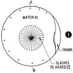
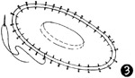
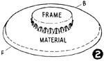
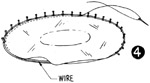
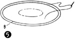
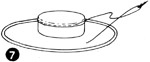
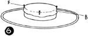
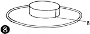

1952—How to Make Hats
by Ruby Carnahan
Covering a Basic Sailor Frame
DESCRIPTION
Use the same sailor pattern for cutting fabric covering that you used to make sailor frame.
Instructions for making frame page 27.
If covering a ready-made frame, make a paper pattern of frame and use to cut fabric covering.
MATERIAL REQUIRED
- 1/2 yard of material is required to cover a sailor frame if edge of brim is to be finished with a wire.
- 3/4 of a yard is required if brim is to be finished with a bias fold.
- Lining and ribbon headband.
CUTTING MATERIAL
(Illus. 1) Place brim pattern on bias of material and mark around brim edge and headsize. Allow 1/2" on brim edge when cutting out material. (Do not cut material out on line around headsize). Slash material inside the line from back to front and from side to side, and every half inch around headsize just to the line. Mark back and front. Cut out two brim pieces just alike.
COVERING BRIM
Put brim piece on top of frame brim, pulling it over the frame crown and down on brim. Match front and back markings on frame and material (Illus. 2). Extend material 1/2" on brim edge. Turn material over brim edge 1/2". Pin and sew to under side of frame (Illus. 3), catching material to frame. Place facing piece of material on under side of brim, match markings on frame and material and extend material 1/2" on brim edge. Pin facing to frame around brim edge and headsize.
FINISHING BRIM EDGE
Measure a wire to fit around edge of brim and join with a wire joiner. Turn edge of facing material over wire, slightly stretching material until facing is smooth, and free from wrinkles. Pin facing around edge of brim and sew to frame under wire, using a back stitch (Illus. 4). If there seems to be too much material to turn over wire, trim off excess amount before turning material over wire.
FINISHING BRIM EDGE WITH A BIAS FOLD
(Illus. 5) Cut a bias piece of material 3" wide, stretch and pin this bias fold around edge of brim wrong side out. Join ends of fold together on the bias. Remove fold from brim, stitch and press seam open.
With seam on fold in back, pin edge of fold right side out on edge of brim and sew to brim using a back stitch.
Turn fold over edge of brim and pin around brim edge, turn raw edge of fold under. Pin fold to facing on under side of brim. Sew fold to facing using a slip stitch.
COVERING CROWN
Place crown pattern on the bias of material, mark around pattern on material. Mark front of crown on material and allow 1/2" when cutting out material (Illus. 6).
Place material on crown top with mark in front. Pin front, back and sides of material to crown, stretching material slightly as you pin. Turn material over crown edge 1/2" and sew to side crown (Illus. 7).
COVERING SIDE CROWN
(Illus. 8) Measure the depth of side crown on frame, and cut a bias piece of material 2" wider than side crown measures. Stretch and pin bias piece around top of crown and join ends together on the bias. Remove bias piece from crown. Stitch and press seam open. Turn bias piece to right side and slip over crown. Turn material under 1" around top of crown and turn balance of material up around bottom of crown.
Do not sew material around top or bottom of crown.
Finish headsize with a lining and a swirled ribbon headband.
Instructions for linings and headbands page 45.